01
Общество и городская среда · событие дня
После несостоявшегося аукциона актив можно будет выставить на торги с понижением цены.…
Автомобилистам посоветовали своевременно заменить летнюю резину на зимнюю.…
На какую работу переводят Ивана Носкова, пока не известно. Иван Носков был назначен и. о.…
Нашим защитникам и их родным помогают пройти весь путь — от идеи до первого бизнес-плана, рассказывают о доступных мерах поддержки и полезных сервисах».……
В Ульяновске основные работы по модернизации коммунальных сетей планируют завершить до конца ноября.…

В Ульяновске в 2027 году планируют заменить около 80 лифтов в 29 многоквартирных домах.…

Глава города Александр Болдакин ранее поставил задачу содержать в соответствующем состоянии и своевременно вывозить строительный мусор с указанной площадки, а в перспективе – проработать варианты создания здесь общественного пространства для жителей микрорайона.…

Для этого по поручению главы областного центра Александра Болдакина МБУ «Городской центр по благоустройству и озеленению» из собственного питомника предоставил местным жителям 57 саженцев деревьев.…

Автомобилистам посоветовали своевременно заменить летнюю резину на зимнюю.…

erid: 2Vfnxy7vyAu С 1 октября 2026 года семейная ипотека в Ульяновской области стала по-настоящему «богатырской»: плечо поддержки от государства теперь напрямую зависит от количества детей в семье.…


В Центре креативных компетенций «Патриот» прошла встреча участников «Движения Первых» Ульяновской области.…


🔹 Проблемы с теплоснабжением 130 жилых домов в димитровградском микрорайоне Химмаш произошли по причине утечки в подземном газовом колодце.…
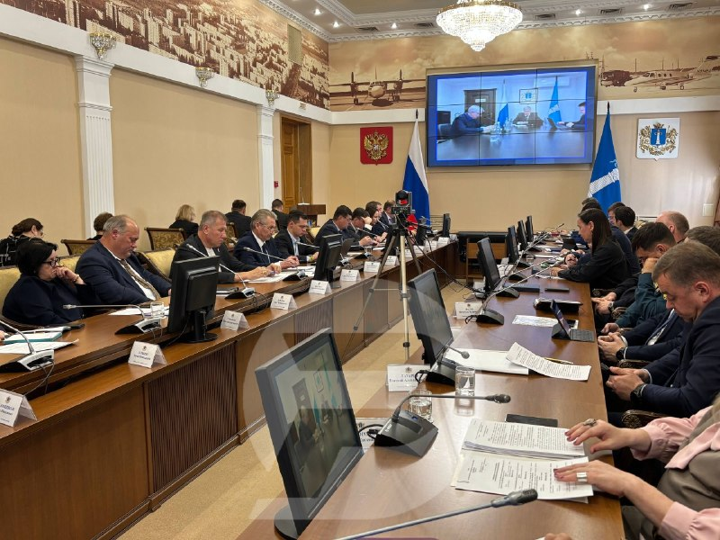
Средний балл регионов в III квартале 2026 года составил 468, что на 14 баллов больше аналогичного периода прошлого года.…
Вкусные презенты передадут нашим защитникам, которые проходят лечение в госпитале.
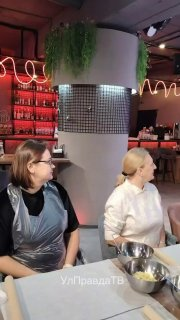
Есть варианты для сладкоежек и для тех, кто любит посерьёзнее.…
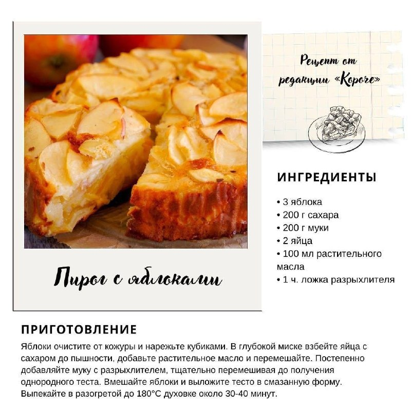
УлГУ уже разработал и запустил в производство шесть других тест-систем и создал две таргетные молекулы.…
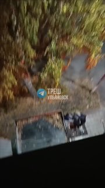

В Заволжском районе Ульяновска 31 октября водитель «Лады Гранты» сбил пожилого велосипедиста.…

О профилактике гриппа, симптомах и вакцинации — в карточках 👆 🇷🇺 Ульяновская область в…

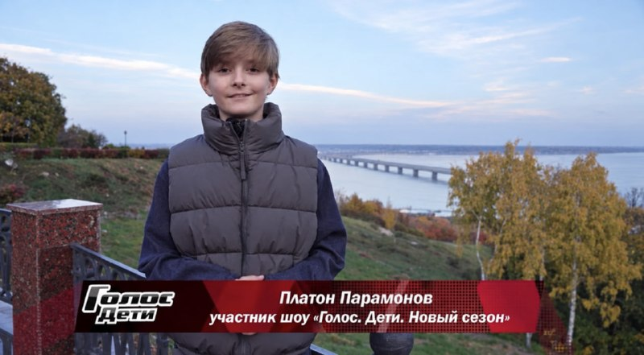
✨ Смотрим и гордимся любимым городом вместе с Платоном!…
Ульяновская спортсменка Римма Афанасьева завоевала бронзовую медаль на Всероссийских соревнованиях по вольной борьбе среди юниорок до 21 года.…

Наставник команды Александр Сметанин признал, что чемпионский костяк удалось сохранить, но из-за нехватки предсезонной практики пришлось понервничать.…

Выйдет 13 ноября, вот ссылка на пресейв: https://band.link/RKpz4 А пока — небольшой…

25 октября в Ульяновске состоялся Кубок региона по баскетболу 3Х3.…

Нариманова, 106 Вы знали, что Булат Окуджава, известный в основном как бард с гитарой, был великолепным прозаиком?…

Жителей и гостей города ждут концерты, фестивали, ярмарка и литературные чтения с участием известной актрисы Ольги Кабо.

Билеты 16.00-17.00 – медиация по выставке «Детская взрослая», малый выставочный зал.…

День народного единства — это повод собраться всей семьёй, встретиться с друзьями, пообщаться с соседями и почувствовать, как много нас объединяет.…
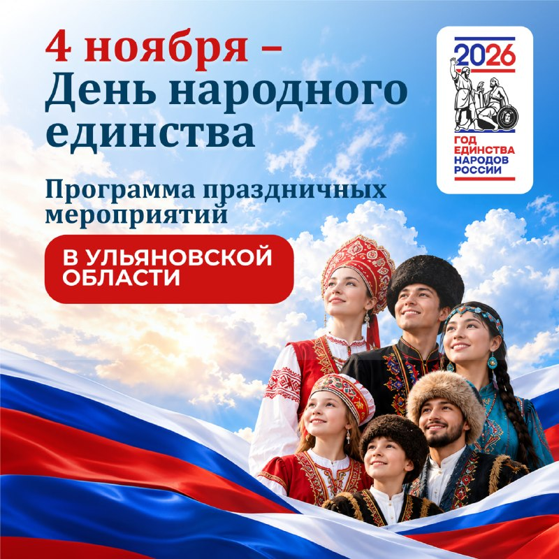
Опубликована программа празднования Дня народного единства в Ульяновской области.
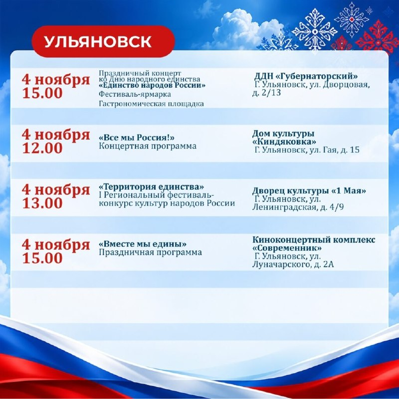
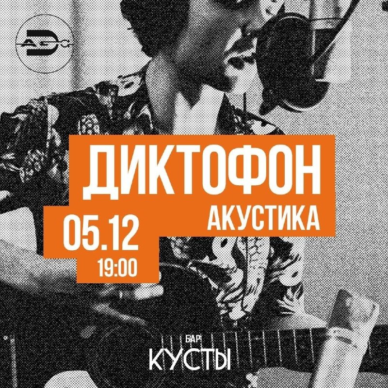
🏷️ вход свободный #4ноября26@culturnik 🕊️ пойду • ❤️ нравится • ✅…
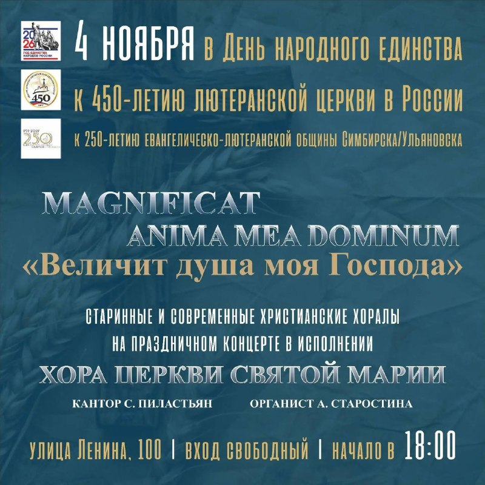
С начала СВО Сергей Пускепалис не оставался в стороне, поддерживал гуманитарные инициативы, помогал жителям Донбасса, искренне верил, что даже маленький поступок может многое изменить.…

Напомним, акция приурочена ко Дню народного единства, а девиз этого года — «В единстве культур — сила народа».…
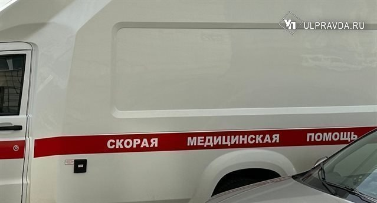
36-летнюю пассажирку госпитализировали. 23-летнюю пассажирку доставили в больницу, назначили ей лечение и отпустили домой.…
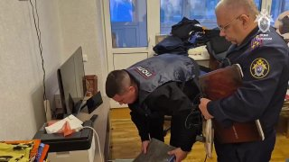
После аварии водителю потребовалась медицинская помощь.…

Снег с дождём, ветер до 8 м/с и колебание температур способствуют образованию гололеда, а портится погода начнёт уже завтра, 3 ноября.…

Одному из сотрудников он порезал подбородок и плечо, а также сломал палец.…


Объявлен жёлтый уровень опасности. Кроме того, на дорогах образуется гололедица.…
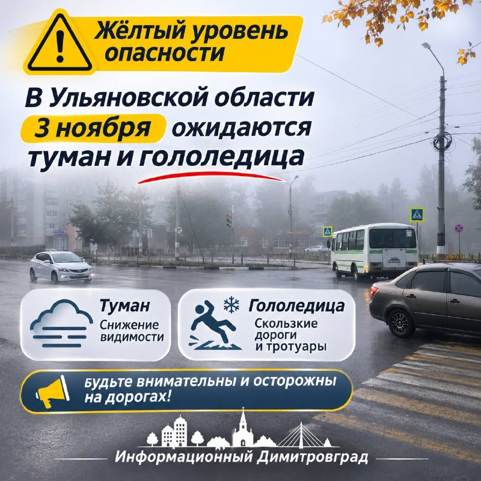
Исполняющую обязанности главы администрации Глотовского городского поселения привлекли к административной ответственности за нарушение порядка рассмотрения жалобы местной жительницы.…

Как стало известно порталу 73online, это фирмы ООО «Эталон» и ООО «Технология».
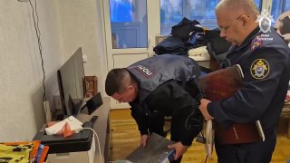
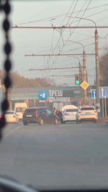

В Ульяновской области с января по 31 октября 2026 года Россельхознадзор признал недействительной 141 декларацию на зерно общей массой 235,85 тысячи тонн.…

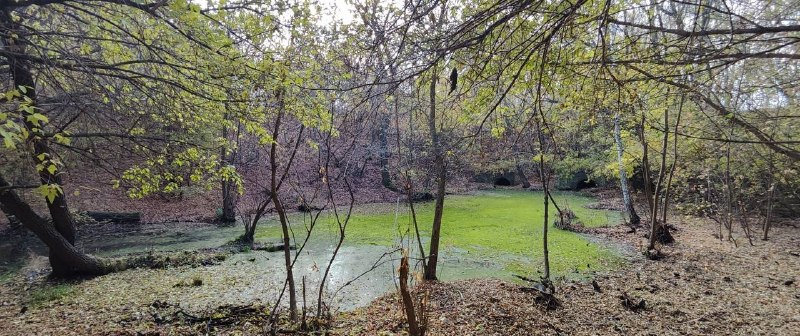
Ульяновск – город контрастов. Константы заявляемого и того, что делается на практике.…
Арендовать самокаты можно только с 18 лет с подтверждением возраста через мессенджер MAX.…
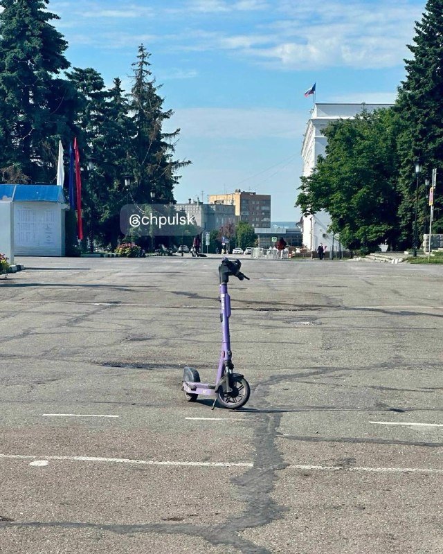
Новые правила распространятся только на билеты, приобретённые с 1 декабря 2026 года.
Британский государственный пропагандистский холдинг ВВС вместе с рядом крупных изданий публикует новости в формате " пищевые отходы как прекрасный источник клетчатки ".…
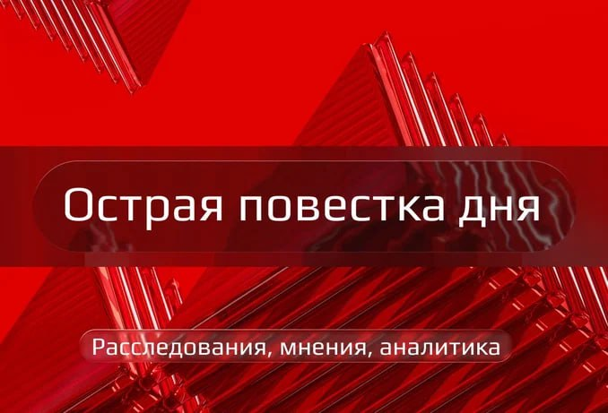
В преддверии Дня народного единства ульяновские женщины — мамы, супруги участников СВО — пекут пироги с колоритом традиционной кухни народов Поволжья.…
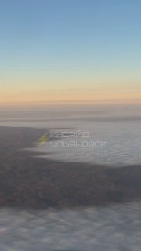
Жители домов по ул. Генерала Мельникова, д. 7, 5, 9, 3 и другие, уже два месяца задыхаются от невыносимой вони.…


🔹 Ядерная медицина и отечественные тест-системы.…

В рамках профориентационного проекта «Билет в будущее» — части национального проекта «Молодёжь и дети», инициированного президентом России Владимиром Путиным, — обучающиеся 5–9 классов Старобесовской школы побывали на экскурсии на ООО «Кармалинский ЗРМ».…
🔹 Фишка: формат Point-of-Care — анализ прямо на месте забора материала.…

Инклюзивные практики «Светлячка» уже получили федеральное признание: центр стал лауреатом Всероссийского конкурса «Лучшая инклюзивная школа» в номинации «Лучшая организация отдыха детей и их оздоровления» и победителем специальной номинации за эффективное взаимодействие с родителями.……
В декабре 2026 года в Ульяновском государственном университете планируют открыть центр производства тест-систем для диагностики онкологических заболеваний и гепатита.…
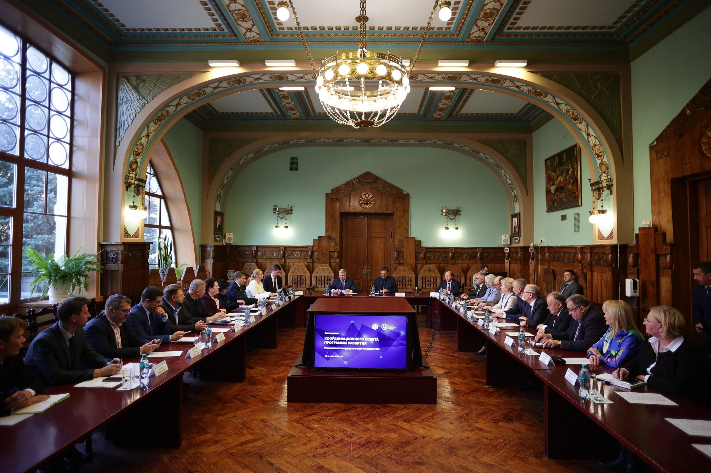
По замыслу университета, проекты должны помочь удержать выпускников в Ульяновской области.…

При этом властям и бизнесу придется пересмотреть подход к школьному образованию, ведь профильные классы в регионе сейчас работают скорее «для галочки».…


Об этом сообщил заместитель главного конструктора китайской программы пилотируемой космонавтики и главный конструктор программы исследования Луны Ван Сян .…
В один из октябрьских дней в филиале МОУ Новочеремшанская СШ в селе Вороний Куст царила особая атмосфера — тёплая, немного волнительная и очень искренняя.…
Шесть лет на посту министра Семёновой увенчались откровенной профанацией: молодым учителям нужны достойные зарплаты, а опытным наставникам — реальная оплата за шефство над коллегами.……
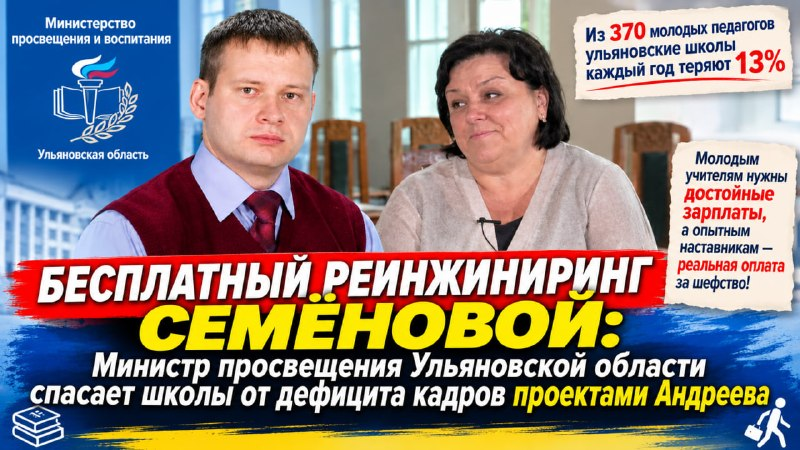
| Тема | Завтра | Ожидание | Уверенность |
|---|---|---|---|
| Суды и криминал | ↓ спад | ~28.0 упоминаний | средняя |
| БПЛА и воздушные угрозы | ↓ спад | ~22.1 упоминаний | средняя |
| Бюджет-2027 | ↓ спад | ~9.1 упоминаний | средняя |
| Городская среда | ↓ спад | ~15.7 упоминаний | средняя |
| Губернатор / власть | ↓ спад | ~28.8 упоминаний | средняя |
| Школы и вузы | ↓ спад | ~16.1 упоминаний | средняя |